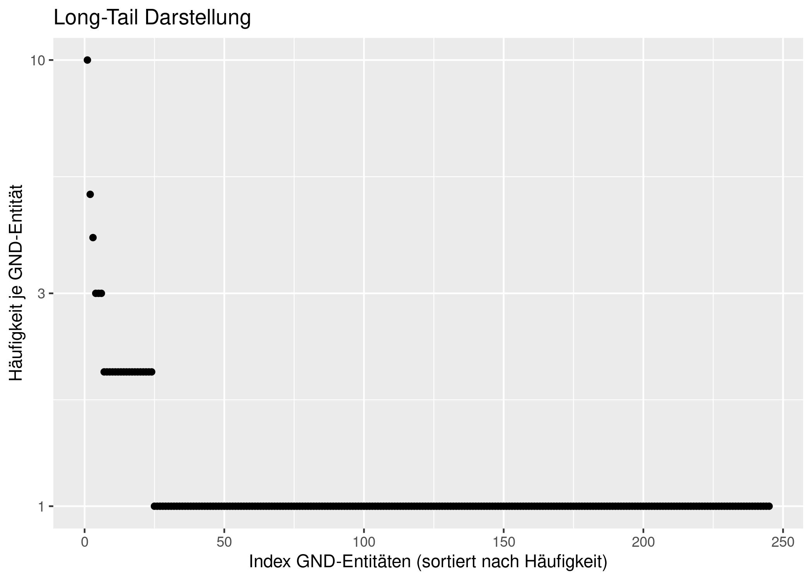

Verwendung von pica-rs zur Datenanalyse mit RMarkdown
Beispielhaft wird in diesem Tutorial demonstriert, wie das Toolkit
pica-rs für Datenanalysen mit
RMarkdown eingesetzt werden kann.
Datenabfrage mit pica-rs und Datenanalyse mit R können so in einem
gemeinsamen Dokument kombiniert werden.
# Setup:
# Globale Einstellungen für das Ausführen von Code-Blöcken durch knitr
knitr::opts_chunk$set(echo = TRUE, message = FALSE, dev="jpeg", dpi = 300, fig.path = "plots/")
# Laden von R-Paketen
library(tidyverse) # beinhaltet u.a. readr, dplyr und ggplot2
Datenabfrage
Zunächst erzeugen wir mit folgender Pica-Abfrage von der Datei
testdaten.dat eine CSV-Datei mit allen Tupeln aus Titel-idn und
GND-Entität-idn. Um die GND-Entitäten abzurufen, die mit einem
Titeldatensatz verknüpft sind, muss das Listenfeld 041A mit
pica select ausgelesen werden. Sind mehrere GND-Entitäten in einem
Titel-Datensatz vohanden, expandiert pica select diese automatisch,
d.h. im Output title_idn_gnd_idn.csv kommen auch IDN-Nummern von
Titeln ggf. mehrfach vor (je eine Zeile pro GND-Entität).
pica select -s --no-empty-columns -H "idn_titel, idn_sw" "003@.0,041A/*.9" \
../testdaten.dat -o title_idn_gnd_idn.csv
Die Datei title_idn_gnd_idn.csv kann ggf. auch nur temporär erzeugt
werden, wenn ein Zwischenspeichern des Outputs von pica-rsnicht
gewünscht ist. Das Einlesen der Date in R erfolgt über die üblichen
Funktionen, z.B. aus dem tidyverse-Unterpaket readr.
title_idn_gnd_idn <- read_csv("title_idn_gnd_idn.csv",
col_types = list(
idn_titel = col_factor(),
idn_sw = col_factor()))
Datenanalyse
Wir wollen die abgefragten Daten im Folgenden beispielhaft analysieren: Zunächst erzeugen wir eine zusammenfassende Zählstatistik:
count_summary <- title_idn_gnd_idn %>%
summarise(
n_title = n_distinct(idn_titel),
n_terms = n_distinct(idn_sw)
)
In dem so erzeugten Datensatz gibt es 245 verschiedene GND-Entitäten, die an mindestens einen von 103 verschiedenen Titel-Datensätzen vergeben wurden.
Als nächstes beantworten wir die Frage, wie viele GND-Entitäten pro Titel im Durchschnitt verwendet werden:
sw_per_title <- title_idn_gnd_idn %>%
group_by(idn_titel) %>%
summarise(n_sw = n())
card_d <- sw_per_title %>%
summarise(
n_title = n(),
avg_count = sum(n_sw)/n_title
) %>%
pull(avg_count)
Im Mittel liegen 2.77 GND-Entitäten pro Titel vor.
Wir wollen nun die IDN-Nummern der am häufigsten verwendeten GND-Entitäten ausgeben:
gnd_term_freq <- title_idn_gnd_idn %>%
group_by(idn_sw) %>%
summarise(freq = n()) %>%
arrange(desc(freq))
head(gnd_term_freq, n = 10) %>%
knitr::kable()
| idn_sw | freq |
|---|---|
| 040118827 | 10 |
| 040305503 | 5 |
| 040538818 | 4 |
| 041245113 | 3 |
| 041248538 | 3 |
| 041879635 | 3 |
| 040509265 | 2 |
| 040013073 | 2 |
| 118636405 | 2 |
| 040526925 | 2 |
Datenvisualisierung
Über alle Schlagwörter betrachtet sieht die Verteilung der GND-Entitäten-Verwendung wie folgt aus:
g <- ggplot(gnd_term_freq, aes(x = freq)) +
geom_histogram(aes(y = (..count..)/sum(..count..)), binwidth = 1) +
scale_y_continuous(labels = scales::percent, limits = c(0,1)) +
scale_x_continuous(breaks = c(0,2,4,6,8,10)) +
xlab("Häufigkeit GND-Entitäten-Verwendung") +
ylab("Anteil an allen GND-Entität") +
ggtitle("Verteilung GND-Entitäten-Verwendung")
g

Das Histogramm zeigt, dass die meisten GND-Entitäten nur einmal verwendet werden. Einzelne Terme werden aber auch bis zu 10-mal verwendet.
Eine andere Visualisierungsform des gleichen Sachverhalts ist Folgende:
gnd_term_freq <- gnd_term_freq %>%
mutate(index = 1:n())
ggplot(gnd_term_freq, aes(x = index, y = freq)) +
geom_point() +
scale_y_log10() +
ylab("Häufigkeit je GND-Entität") +
xlab("Index GND-Entitäten (sortiert nach Häufigkeit)") +
ggtitle("Long-Tail Darstellung")

Dieses Tutorial selbst ausführen
Um das hier vorgestellte Tutorial selbst auszuführen, stehen im
offiziellen github-Repository des Toolkits pica-rs die
.rmd-Quelldatei
sowie ein Testdatensatz im PICA+
Format
für dieses Tutorial zum Download zur Verfügung.